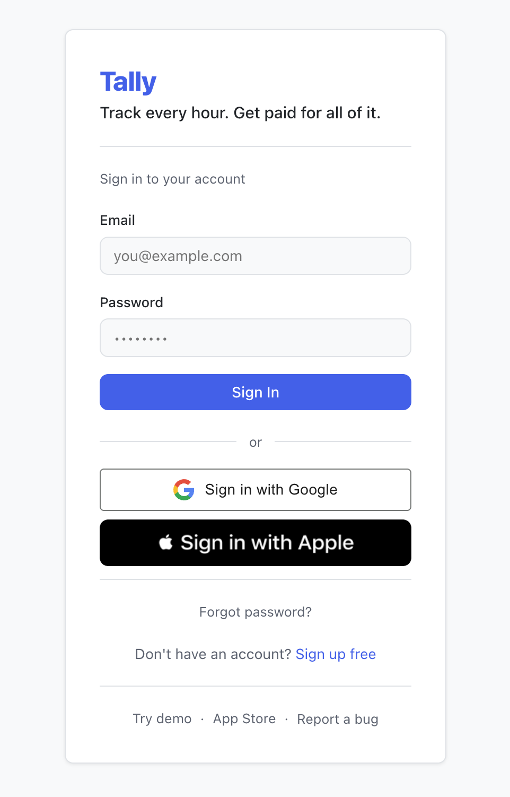
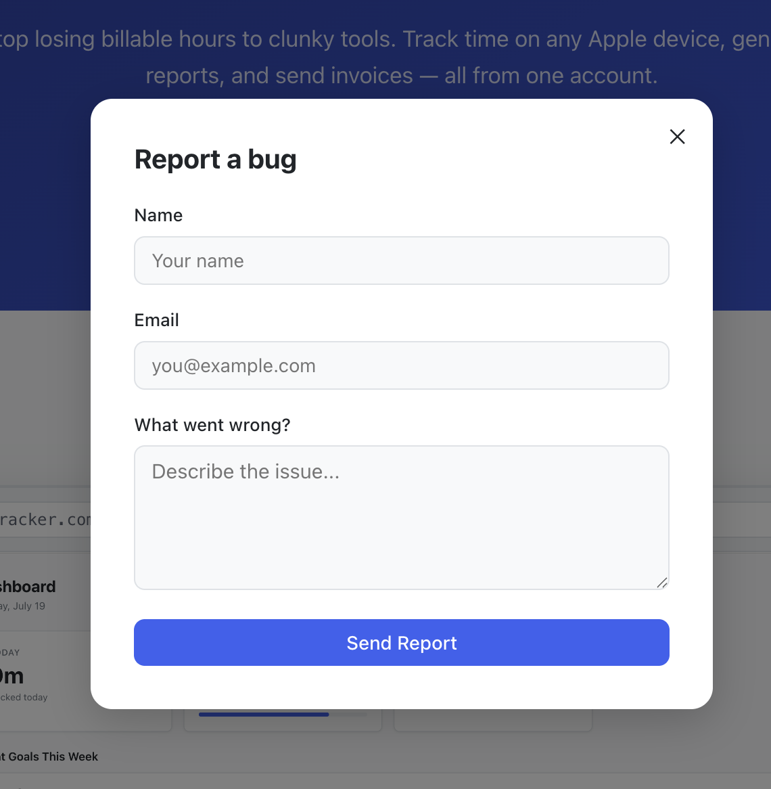
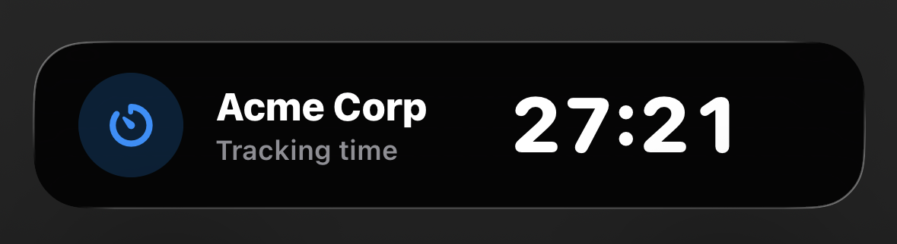
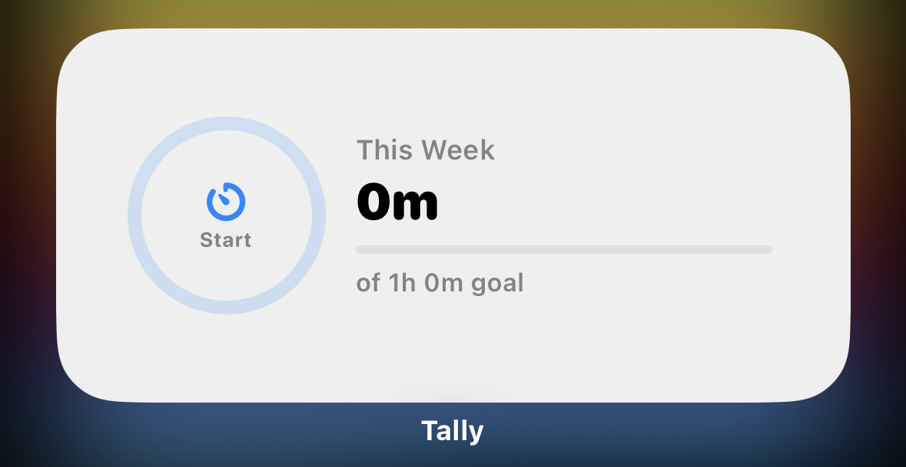
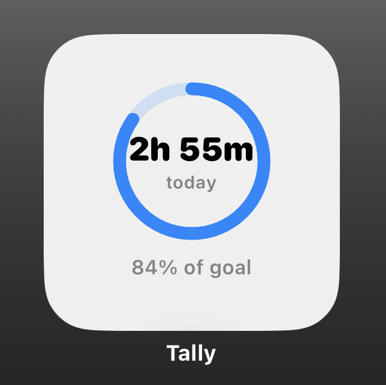

George Clinkscales Jr.
George Clinkscales Jr.Tally — Time Tracker
Cross-platform time tracker for freelancers and small teams — native iOS, Apple Watch, Mac, and a React web dashboard on one shared backend. Free to start, $9.99 one-time for Pro, or $4.99/month for Business with team collaboration and client invoicing sent directly by email.
The Problem
Freelancers and small teams needed a way to track billable hours and generate invoices without paying $10–20/month for features they'll never use. The goal was one app that works everywhere — phone, watch, laptop, browser — with a pricing model that matches how people actually use it: free to try with no time limit, $9.99 once for solo professionals who want everything, and $4.99/month for teams that need collaboration and invoicing.
Web Landing Page
The marketing site includes iOS screenshots, a live demo, pricing, and App Store integration — fully responsive down to mobile.
Mobile Experience
The native iOS experience is powered by SwiftUI, ActivityKit Live Activities, and WidgetKit, paired with a fully responsive web landing page and dashboard.
Landing page — mobile layout
Architecture
Tally is a native iOS app (iPhone, Apple Watch, Mac via Catalyst) paired with a React web dashboard, both running on a shared Supabase backend. Buying Pro on iOS unlocks the web too — StoreKit and Stripe both write to the same subscription record in the database, so neither platform has to check two payment systems.
Auth
Authentication supports email/password, Sign in with Apple, and Sign in with Google on both iOS and web. The web app includes a full forgot password flow — users request a reset link, Supabase emails it via Resend over custom SMTP, and a recovery token handler in the React app detects the link regardless of where Supabase redirects and presents the reset form. A built-in bug report modal (also powered by Resend) is surfaced on the landing page, login page, and inside the dashboard settings — so users can report issues from anywhere without leaving the app.

Web login — Sign in with Google and Apple

Bug report modal — powered by Resend
Business Tier
The Business tier adds team workspaces with admin and member roles enforced at the database level via row-level security — not just in the UI — plus a shared weekly hour goal per workspace so teams can track progress against a client contract. Invoice generation pulls from tracked sessions with draft → sent → paid status tracking, outstanding balance summaries, and one-click email delivery to clients via Resend. Stripe webhooks, transactional email, and team invites all run in Supabase Edge Functions (Deno), so there's no Node server to maintain or deploy.
iOS Integration
The iOS app integrates deeply with the OS: ActivityKit powers a Live Activity on the lock screen and Dynamic Island so the running timer is always visible without opening the app. WidgetKit adds a home screen widget in small and medium sizes. App Intents expose Siri shortcuts for starting and stopping a timer, and a Focus Mode filter lets Tally automatically activate when a work focus is on.

Lock screen Live Activity — check your timer without unlocking

Large widget — weekly hours and goal progress

Small widget — start timer and goal percentage
Core Features
- Timer with pause/resume and manual session entry
- "Log again" shortcut — re-open the same client and task from any recent session
- Weekly hour goal with per-client sub-goals and progress bars
- Budget tracker per client — progress bar turns red when over budget
- Reports showing hours and earnings side-by-side with period-over-period comparison
- Session calendar and CSV export
- Web app adds voice control — say "start", "pause", or "save" to control the timer hands-free
Web Dashboard
Built with React and Vite — a time tracker has no SEO requirements, so it deploys as static files on Vercel with no framework overhead. The public demo account is seeded with realistic sessions that automatically adjust to the current week — a GitHub Actions cron job runs nightly to delete and re-seed data, so the dashboard always shows meaningful numbers no matter when someone visits.
What Was Hard
This was my first cross-platform project — keeping iOS, watchOS, Mac, and a React web app in sync against one backend required every layer to be correct at once.
Payments were the other wall. Wiring StoreKit and Stripe to write to the same subscription record — so iOS Pro unlocks the web without checking two systems — took longer than any single feature. Getting App Store approval took nearly 10 rejections. Each one came back with a different guideline violation, and I worked through every one until it shipped.
The Outcome
Over 100 downloads since launch. Tally is the most complex thing I've built — not because any single piece is hard, but because four platforms, two payment systems, and a shared backend require every layer to be correct at once. It all has to work, and it does.

 tallytimetracker.com
tallytimetracker.com